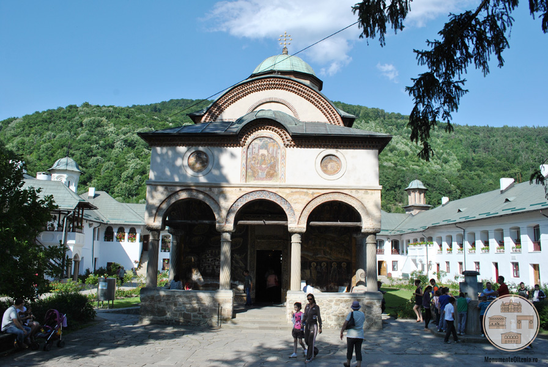

Galerie Foto



Situată într-un spațiu idilic, pe malul Oltului, Mânăstirea Cozia este cea mai frumoasă și mai importantă ctitorie a Voievodului Mircea cel Bătrân (1386-1418), precum și una din cele mai frumoase așezări monahale din sud-estul Europei. Construită între anii 1386 (sau 1387, după alte surse) – 1388 și restaurată de mai multe ori de-a lungul timpului, Mânăstirea Cozia este un monument istoric de arhitectură de importanță națională. Complexul arhitectural înscris pe Lista Monumentelor Istorice cuprinde Biserica “Sf. Treime” (VL-II-a-A-09697.01), Paraclisul “Adormirea Maicii Domnului” (VL-II-a-A-09697.02), Paraclisul “Duminica Tuturor Sfinților” (VL-II-a-A-09697.03), Trapeza (VL-II-a-A-09697.04), Bolnița “Sf. Apostoli” (VL-II-a-A-09697.05) și corpul de clădiri ale incintei – laturile de nord, est și sud (VL-II-a-A-09697.06).
Înfățișarea actuală a mânăstirii e dată de un șir lung de restaurări de-a lungul secolelor. Cele mai importante au fost făcute de Neagoe Basarab în 1517, de egumenul Amfilohie la sfârșitul secolului al XVI-lea, de Șerban Cantacuzino în secolul al XVIII-lea, de Comisiunea Monumentelor Istorice între anii 1920 și 1930 și de Direcția Monumentelor Istorice între anii 1958 și 1960. Prin efortul financiar al călugărilor de la Cozia, între 1983 și 1985 a fost restaurată pictura murală din Biserica Sf. Treime (cunoscută ca Biserica Mare), iar începând cu anul 2000 s-a introdus încălzirea geotermală și au fost realizate ample lucrări de reparații și întreținere a mânăstirii.
SCURT ISTORIC Manastirea Cozia în secolul al XIV-lea Mânăstirea Cozia e situată pe Valea Oltului, fiind înălțată de Mircea cel Bătrân (1355-1418) să păzească “vadul Oltului și drumul către cetatea de Scaun a țării”. Alte surse îl indică pe tatăl său, Radu I (1330-1383), drept ctitor al mânăstirii (cunoscută atunci sub numele de Nucet), fiii acestuia, Dan și Mircea finalizând construcția. La 18 mai 1388, Sf. Nicodim de la Tismana, cel ce a reorganizat călugării din Oltenia și a întemeiat mânăstirile de la Vodița și Tismana, a oficiat slujba de sfințire a mânăstirii. Primul egumen însărcinat să conducă obștea monahală a Coziei a fost Ieromonahul Chir Gavriil, ucenicul său. Din timpul lui Mircea cel Bătrân datează în forma originală Biserica Mare de la Cozia, cu hramul Sf. Treime, – cu excepția pridvorului -, și fundațiile clădirilor mânăstirești care alcătuiesc incinta interioară pe laturile de est și sud. Tot atunci ar fi fost construită o fântână care asigura apa necesară ridicării bisericii, existența ei fiind atestată de cercetările arheologice din 1960.